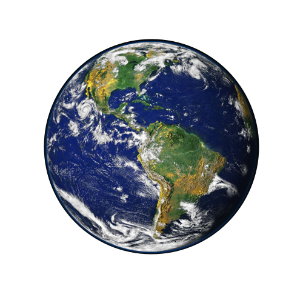

Chapter 3: Orbits and Gravity
ASTRONOMY
Goals for this Section
|
. But don’t let the perspective fool you! They are, in fact, not interacting at all. The two galaxies, located between 117 and 140 million light-years away in the constellation of Hydra, are actually physically unrelated and only appear to overlap when viewed from Earth. This unique alignment gives astronomers the opportunity to measure many properties of the galaxies, such as how dust absorbs starlight, and hence gain insight into their composition and evolution.")
|
3.1 The Laws of Planetary Motion
Subsection slide
Do something!!!
Hello there
General Kenobi
3.2 Newton's Great Synthesis
Subsection slide
3.3 Newton's Universal Law of Gravitation
Subsection slide
3.4 Orbits in the Solar System
Subsection slide
3.5 Motions of Satellites and Spacecraft
Newton's Cannonball
Initial speed = 3000 m/s
Simulation of Newton's cannonball.